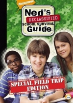

BurningSeries - Simpsons und weitere Serien kostenlos online sehen
Neds ultimativer Schulwahnsinn
Staffel 2

Danke an
fritz
Staffeln:
1
2
3
Zufall
Episoden:
1
Das neue Schuljahr + Wahlpflichtfächer
New Semester and Electives
Videos:
PutLocker
2
Motivationstage + das Mittagessen
Pep Rallies and Lunch
Videos:
PutLocker
3
Videoprojekte + Schulclubs
Video Projects and School Clubs
Videos:
PutLocker
4
Notizbücher + Mathe
Notebooks and Math
Videos:
PutLocker
5
Valentinstage + Schulhomepages
School Websites and Valentine's Day
Videos:
PutLocker
6
Stellvertretende Direktoren + Montage
Vice Principals and Mondays
Videos:
PutLocker
7
Dein Körper + Aufschieben
Your Body and Procrastination
Videos:
PutLocker
8
Obere Klassenschichten + Ekliger Bio-Unterricht
Upperclassmen and Gross Biology Dissection
Videos:
9
Mutproben + Schlechte Angewohnheiten
Dares and Bad Habits
Videos:
10
Vertretungslehrer + Neue Schüler
Substitute Teachers and the New Kid
Videos:
11
Schüchternheit + Spitznamen
Nicknames and Shyness
Videos:
12
Verabredungen + Recycling
Asking Someone Out and Recycling
Videos:
13
1.April + Ausreden
April Fools Day and Excuses
Videos:
14
Geheimnisse + Schul-Autowaschanlage
Secrets and Car Wash
Videos:
15
Spirit-Wochen + Kleidung
Spirit Week and Clothes
Videos:
16
Wissenschafts-Messen + Studierzeit
Science Fair and Study Hall
Videos:
17
Jahrbuch + Berufsberatung
Yearbook and Career Week
Videos:
18
Musikunterricht + Classenclown
Class Clown and Music Class
Videos:
19
Versagen + Nachhilfeunterricht
Failing and Tutors
Videos:
20
Doppel-Dates + letzter Schultag
Double Dating and the Last Day
Videos:
21
Überlebenstipps für Schüchternheit
Shyness
Videos:
22
Überlebenstipps für Spitznamen
Nicknames
Videos:
23
Überlebenstipps für Verabredungen
Asking Someone Out
Videos:
24
Überlebenstipps für Recycling
Recycling
Videos:
25
Überlebenstipps für Spirit-Wochen
Spirit Week
Videos:
26
Überlebenstipps für Kleidung
Clothes
Videos:
27
Überlebenstipps für Geheimnisse
Secrets
Videos:
28
Überlebenstipps für die Schul-Autowaschanlage
School Car Wash
Videos:
29
Überlebenstipps für den 1. April
April Fools Day
Videos:
30
Überlebenstipps für Ausreden
Excuses
Videos:
31
Überlebenstipps für Wissenschafts-Messen
Science Fair
Videos:
32
Überlebenstipps für die Studierzeit
Study Hall
Videos:
33
Überlebenstipps für das Jahrbuch
Yearbook
Videos:
34
Überlebenstipps für die Berufsberatung
Carrer Week
Videos:
35
Überlebenstipps für den Musikunterricht
Music Class
Videos:
36
Überlebenstipps für den Klassenclown
Class Clown
Videos:
37
Überlebenstipps für das Versagen
Failing
Videos:
38
Überlebenstipps für den Nachhilfeunterricht
Tutors
Videos:
39
Überlebenstipps für Doppel-Dates
Double Dating
Videos:
40
Überlebenstipps für den letzten Schultag
The Last Day
Videos:
Geheimnisse + Schul-Autowaschanlage
Secrets and Car Wash
Noch keine Beschreibung verfügbar.
Bewertung:
0 von 5 (0 Stimmen)
Hoster dieser Episode
(insgesamt 0 Views)